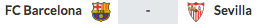

28/10/2017
05/11/2017
26/10/2017
Don't miss these games and support your team!
Penya Blaugrana London provides an environment where FC Barcelona fans can socialise, enjoy, meet other FC Barcelona fans and make frienships. PB London, as an official Penya, is committed to participate and assist FC Barcelona in activities in the London area, such as Champions League matches against London teams. PB London is also committed to promote FC Barcelona historical values of social integration, civic responsability, respect, tolerance, sportsmanship, solidarity, fair play,
Bar&Co is the official premises of Penya Blaugrana London. PBL members and friends usually meet at Bar&Co to watch FC Barcelona games. Bar&Co is a boat located and moored at Temple Pier, right outside Temple Station and only 5 minutes from Embankment station, with unique views of the London Eye, Big Ben and Oxo Tower. Bar&Co is certainly the best place to watch FC Barcelona in London!